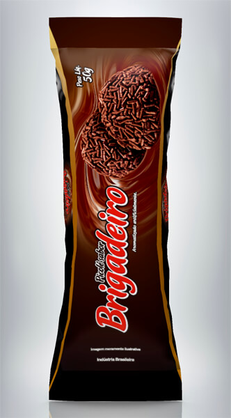
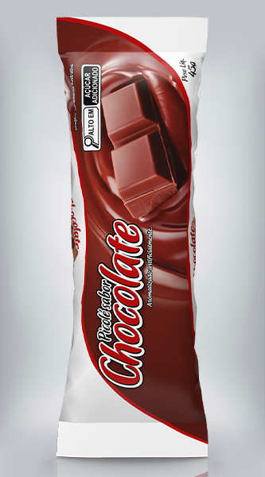
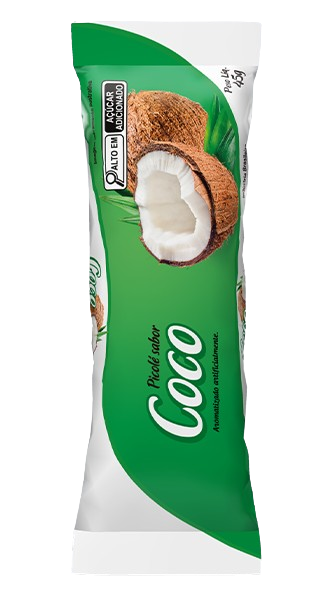

ABACAXI
Refrescante e saboroso, o picolé de abacaxi combina com o doce e o azedinho na medida certa, garantindo leveza e muito frescor a cada mordida !

BRIGADEIRO
Cremoso e irresistível, o sorvete de brigadeiro traz o sabor intenso do chocolate com a doçura na medida certa, garantindo uma experëncia deliciosa a cada colherada !

CHOCOLATE
Clássio e marcante, o sorvete de chocolate possui sabor rico e textura cremosa, perfeito para quem não abre mão de um doce tradicional e cheio de sabor !

COCO BRANCO
Leve e refrescante, o sorvete de coco branco tem sabor suave e cremoso, perfeito para quem busca um toque tropical !